모험 허브 · 콘텐츠 (묶음 4) + 모험 결과 · 정산 (묶음 5) 시안
2차 (PD 결정 반영) · 정한 시안에는 초록 「확정」, 품질을 올린 화면은 시안 안의 「1차 ↔ 2차」 단추로 같은 상태를 바꿔 볼 수 있어요(기본 2차). 기억의 회랑 · 신전은 새 시안 A / B에서 골라 주세요(1차 반려안은 접어 둠). 고르지 않은 1차 시안은 각 자리에 접혀 있습니다. 등급전 결과 B · 겹침 · 도움말 B는 1차 그대로 확정, 잿빛성 「페이지 (D4-5) : B」 메모는 결과 화면(D5-1) B로 읽었습니다.
design/feedback70/ui_inventory.html 의 D4-1 ~ D4-6 · D5-1 ~ D5-5 입니다. 콘텐츠마다 페이지 → 결과를 붙여서 보여 줍니다(원소섬 = 달력 · 등급전 = 리그 · 회랑 = 복도 · 잿빛성 = 성벽 · 신전 = 신전). 화면마다 A · B · C 중 하나를 누르면 「고름」 표시가 붙고, 페이지에서 고른 글자와 같은 결과 시안에는 「페이지 시안과 짝」 표시가 붙습니다. 맨 위 「결과 복사」로 고른 것을 한 번에 복사합니다. 정해진 것은 그대로 썼습니다: 오른쪽 책갈피 틀, 결과의 보상 띠 카드 날아옴 + 「받기」, 「등급 점수」 낱말, 잠김 배지 + Lv 꼬리표, 가이드 퀘스트가 짚는 「열기 · 입장 · 도전」 단추(이름 · 한 개씩 · 크게). 그림은 모두 게임 안 그림이고 수치 · 이름 조합은 예시입니다.
1. 모험 허브 — 여섯 곳으로 가는 첫 화면 (D4-1)
지금은 여섯 장이 같은 카드 · 같은 그림 크기 · 같은 「열기」라 오늘 무엇이 열렸는지 안 보이고, 가이드 말풍선이 카드를 덮습니다(#56). 세 시안 모두 오른쪽 책갈피 틀 안에서 오늘 열린 곳 · 입장권 0 · 잠김(Lv.8) · NEW · 정산까지 남은 시간 · 아래 보너스 줄을 함께 보여 주고, 가이드가 짚는 「열기」는 곳마다 하나씩 그대로 둡니다. 바탕 그림은 #55 안(게임 하늘 · 섬 그림 재조합)을 썼습니다.
지금
같은 카드 여섯 장 · 그림이 AI 같다(#55) · 가이드 말풍선이 카드 위를 덮음(#56).
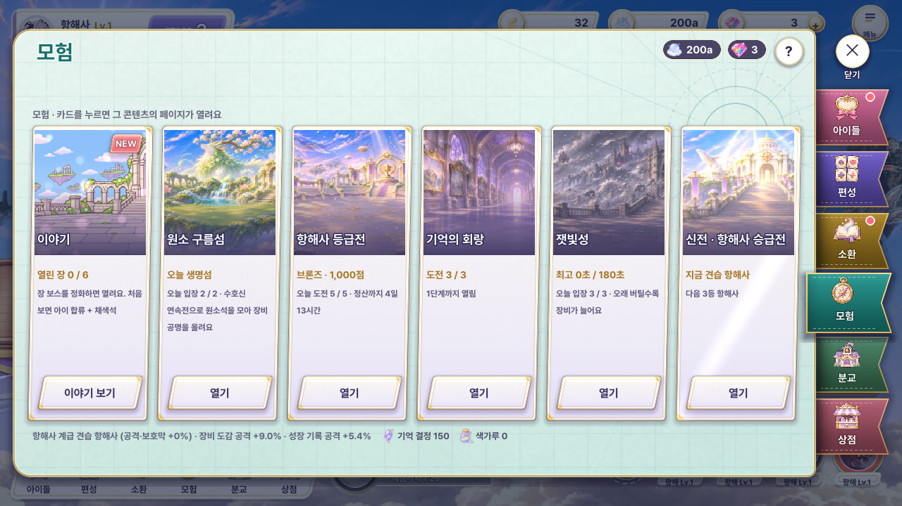
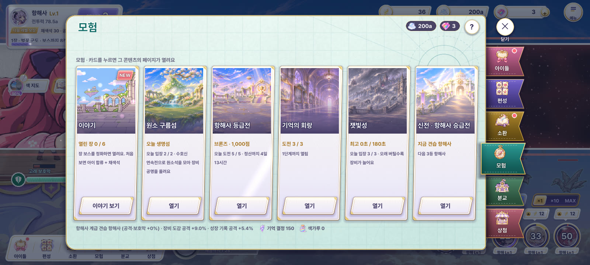
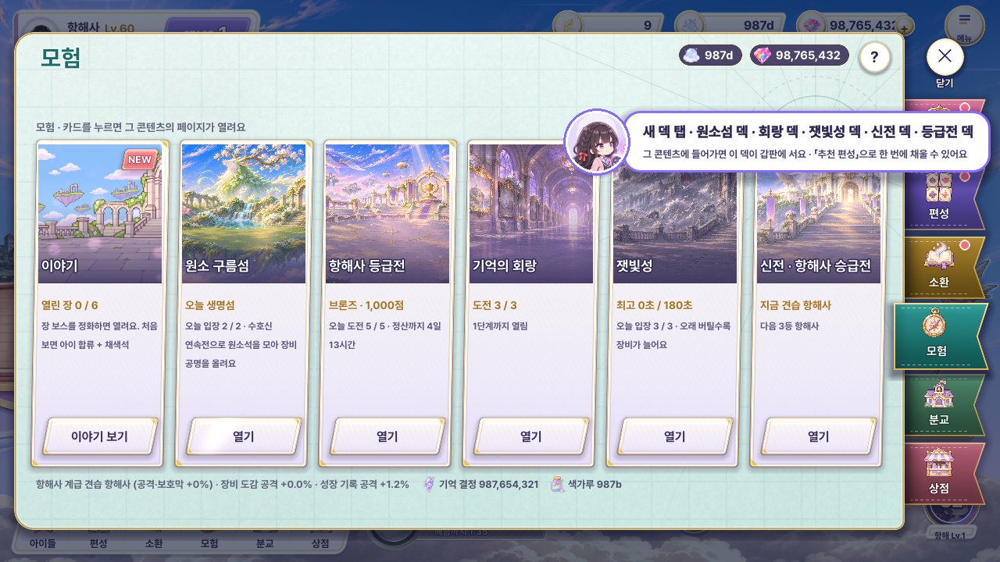
A · 항해도 위 여섯 섬 추천
모험 = 「고래를 타고 섬으로」. 바다 지도 위에 게임의 섬 그림을 띄우고 고래에서 점선 항로가 이어집니다. 오늘 열린 섬은 발밑에 빛 고리가 돌고, 이름표는 섬마다 기울기가 달라 손으로 꽂은 느낌. 입장권이 0이면 섬이 잿빛으로 바래고, 잠긴 섬은 자물쇠 + Lv 꼬리표.
섬 그림은 이미 있는 세계 레이어를 잘라 쓰면 됨(새 그림 0장). 자리가 고정이라 7번째 콘텐츠가 생기면 지도 자리를 다시 짜야 함.
2차 빈 민트 종이 대신 본편 하늘 · 구름 바다 그림(#55 A로 새로 짠 허브 배경) 위에 섬을 띄우고, 섬마다 장소 그림을 다르게(축제 섬 · 잿빛 폐허 · 흰 돔 · 별 관측 섬), 이름표는 보석 메달 + 금 실선 크림 판, 항로는 반짝이며 흐르는 점선, 오른쪽 아래 놋쇠 나침반. 오늘 섬은 구름 위 빛 번짐, 잿빛성 섬엔 재가 날림.
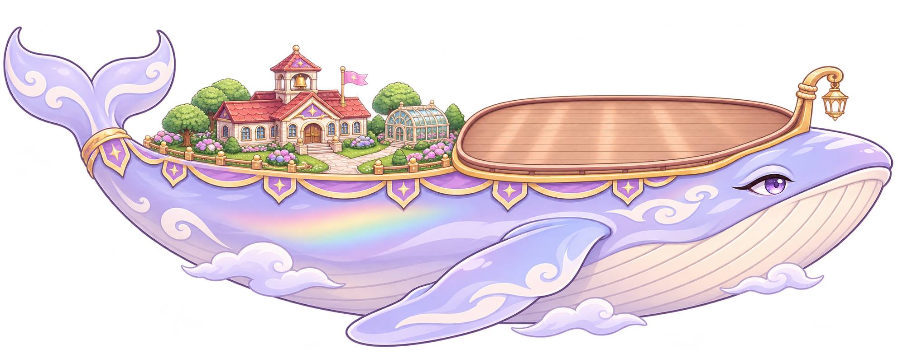
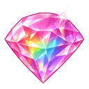
3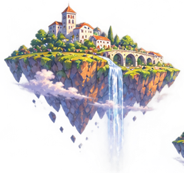
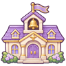
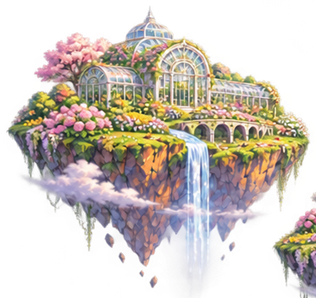
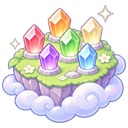
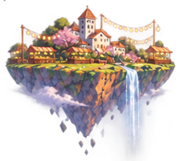
Lv.8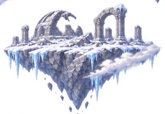
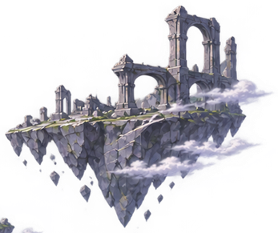
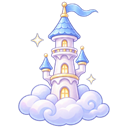
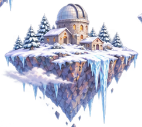
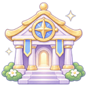
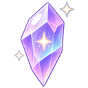
기억 결정 150색가루 0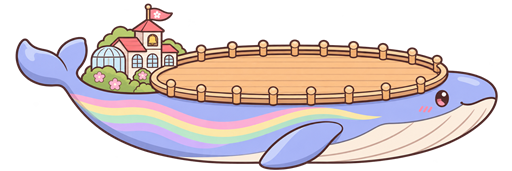
모험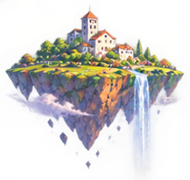
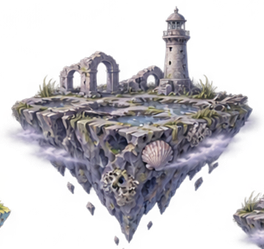
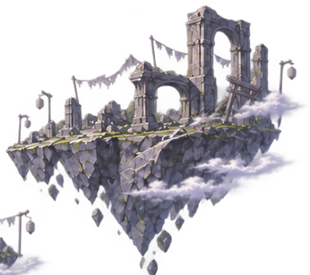
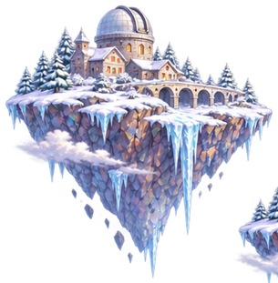
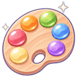
기억 결정 150색가루 01차 다른 시안 · B · 여행 포스터 6장 (고르지 않음)
B · 여행 포스터 여섯 장
구름섬 항구 대합실에 걸린 여행 포스터. 장마다 하늘색 · 섬 · 상징(콘텐츠 아이콘)이 달라 한눈에 갈리고, 아래 절취선 표가 「열기」. 오늘 열린 포스터만 빛이 스치고, 잠긴 곳은 줄무늬 띠 「Lv.8에 열려요」로 감깁니다. 걸릴 때 살짝 흔들리며 내려옵니다.
지금 6장 구조와 가장 가까워 바꾸기 쉬움. 포스터 결이 「종이」 하나라 화면이 다소 얌전함, 오늘 열린 곳의 강조가 A보다 약함.
이야기
열린 장 0 / 6장 보스 정화 · 아이 합류
원소 구름섬
오늘 생명섬오늘 입장 2 / 2
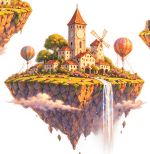
항해사 등급전
브론즈 · 1,000점정산까지 4일 13시간
기억의 회랑
도전 3 / 31단계까지 열림
잿빛성
최고 95초 / 180초
오래 버틸수록 장비
신전 · 승급전
지금 견습 항해사다음 3등 항해사
1차 다른 시안 · C · 오늘 추천 하나 크게 + 작은 다섯 (고르지 않음)
C · 오늘 추천 하나 크게 + 작은 다섯
들어오자마자 「오늘 할 것」 하나가 크게: 유나가 말풍선으로 오늘 섬을 알려 주고 수호신이 섬 뒤에서 내다봅니다. 나머지 다섯은 오른쪽 작은 칸(아이콘 · 상태 · 「열기」). 입장권이 0이면 큰 칸은 다음 할 일(잿빛성 · 회랑 등)로 바뀝니다.
가장 빨리 고르게 해 줌. 「추천」 규칙(무엇을 크게 띄울지)을 새로 정해야 하고, 작은 다섯은 개성이 줄어 「같은 틀」 느낌이 남음.
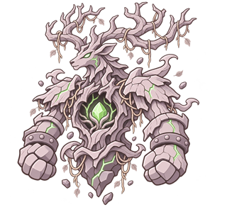
 오늘은 생명섬이 열렸어! 일요일엔 여섯 섬이 다 열려.
오늘은 생명섬이 열렸어! 일요일엔 여섯 섬이 다 열려.장비 도감 공격 +9.0%
성장 기록 공격 +5.4%
2. 원소 구름섬 — 주인공: 요일 달력 · 회전판 (D4-2 → D5-2)
요일마다 섬 하나(월 불꽃 · 화 물결 · 수 생명 · 목 별 · 금 빛 · 토 노을), 일요일엔 여섯 곳 모두. 지금 페이지는 규칙 글자 4줄과 「관문 구간」 표가 겹치고(#56), 세 칸 판이 다른 콘텐츠와 똑같습니다. 세 시안 모두 「도전」 하나 + 「소탕」 하나는 오른쪽 아래 같은 자리, 규칙은 「? 규칙」 한 줄로 접었습니다(#56 안 B). 예시: 수요일 · 생명섬 · 최고 Lv.17.
지금
요일 단추 6개 + 규칙 · 기록 · 공명 세 칸. 규칙 끝 줄과 「관문 구간 → 매일 보상」 제목이 겹침.

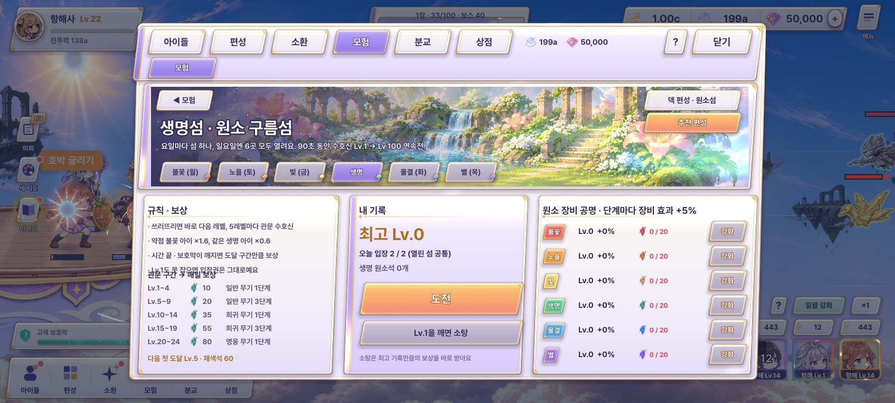

페이지 (D4-2)
A · 요일 회전판 추천
일곱 칸 요일 회전판이 들어올 때 한 바퀴 돌아 오늘 칸에서 멈춥니다. 칸마다 그 섬 그림, 가운데는 오늘의 수호신. 일요일엔 그늘이 걷혀 일곱 칸이 다 밝아지고 가운데에 수호신 여섯. 오른쪽은 관문 사다리(5레벨마다 마름모, 다음 첫 도달은 금빛) · 기록 · 도전 / 소탕.
회전판 하나로 「오늘 · 이번 주」가 한 번에 읽힘. 원 안 글자가 작아 1280에서 섬 이름은 두 줄로만 씀. 회전 연출은 들어올 때 한 번(1.4초)만.
2차 회전판을 놋쇠 테 + 나무 고리 + 양피지 원판으로 다시 그리고, 칸마다 섬 그림을 둥근 창(메달)에 담아 요일 글자가 늘 똑바로 서게 했습니다(1차의 거꾸로 글자 해결). 가운데는 유리 구슬 속 오늘의 수호신. 오른쪽은 크림 종이 판: 관문 마름모 길 · 큰 기록 숫자 · 도전 / 소탕 · 공명 보석 줄. 바탕은 새로 짠 원소섬 하늘(#55 A).
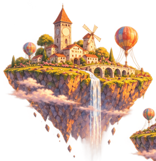
토노을섬 일여섯 섬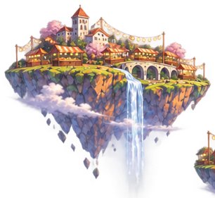
월불꽃섬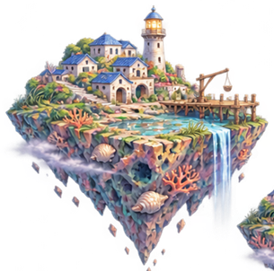
화물결섬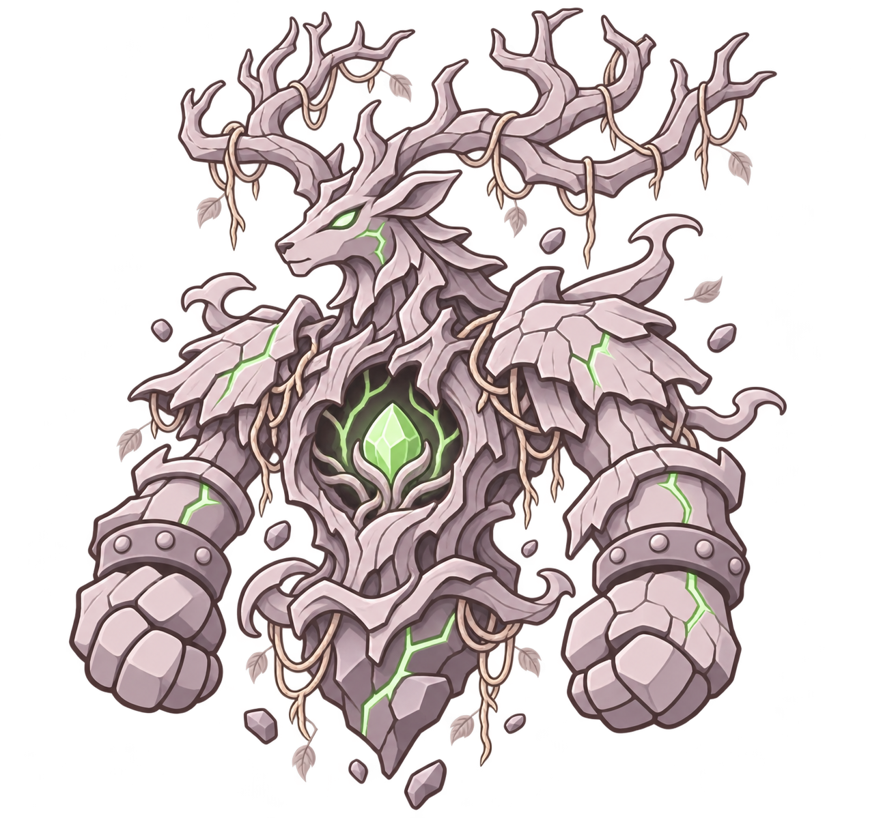
생명 수호신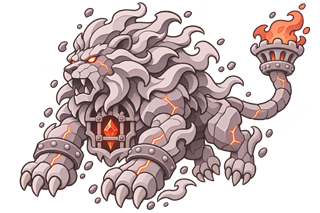
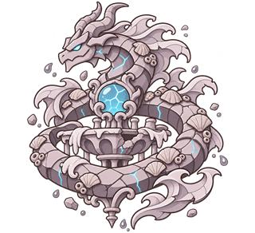
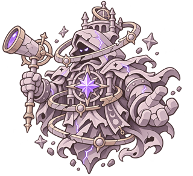
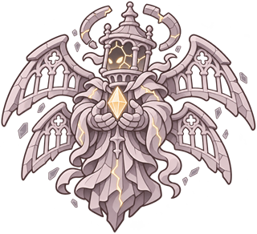
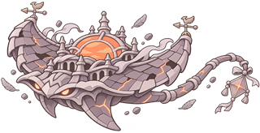
채색석 602529
- 1쓰러뜨리면 바로 다음 레벨 · 5레벨마다 관문 수호신
- 2시간 끝 · 보호막이 깨지면 도달한 만큼 원소석
채색석 602529 최고 17
1차 다른 시안 · B · 세로 수호신 탑 (고르지 않음)
B · 세로 수호신 탑
왼쪽은 뜯는 요일 달력(오늘 장만 앞으로 나옴, 일요일엔 일곱 장이 다 나옴), 가운데는 Lv.1부터 쌓인 수호신 탑. 5층마다 관문층에 수호신 얼굴, 내 최고 층에 초록 깃발, 다음 첫 도달 층에 선물. 오른쪽에 기록과 도전 / 소탕.
「얼마나 올라갔나」가 가장 잘 보임 · 결과(깃발이 올라감)와 바로 이어짐. 탑 위쪽 Lv.30+ 는 다음 업데이트 몫이라 잠김 층이 늘 보임.
생명섬 · 원소 구름섬
90초 동안 Lv.1부터 연속전 · 약점 불꽃 ×1.6
오늘 받는 것 · 생명 원소석 55 · 희귀 무기 3단계
1차 다른 시안 · C · 원소 공명 막대 중심 (고르지 않음)
C · 원소 공명 막대 중심
이 콘텐츠의 진짜 목적인 원소 장비 공명을 앞에: 여섯 유리관에 원소석이 차오르고, 오늘 섬 관만 크게 열려 「강화」. 오른쪽은 오늘 섬 카드 하나(그림 · 기록 · 도전 / 소탕), 요일은 위쪽 작은 칩 줄.
「왜 매일 와야 하나」가 가장 분명. 대신 요일 · 섬 느낌이 약해 달력 주인공이 흐려지고 공명 수치 계산(다음 단계 필요량)을 새로 보여 줘야 함.
규칙 · 관문 보상
결과 (D5-2) — 페이지 A 회전판 → 요일 도장 · B 탑 → 깃발 · C 공명 → 결정
A · 요일 장에 도장 쾅 추천
회전판의 오늘 칸이 달력 한 장으로 뜯겨 나오고 도달 레벨 도장이 찍힙니다(잉크 번짐 테). 관문 첫 돌파면 금빛 둘째 도장 「첫 돌파 · 채색석 60」. 소탕은 「소탕」 도장, 실패는 바랜 빈 도장 + 「입장권은 그대로예요」. 보상은 정해진 띠 카드.
글자 도장 두 개뿐이라 만들기 쉬움. 도장 잉크 결은 CSS 가장자리 마스크로 표현(그림 0장).
2차 달력 장을 고리에서 뜯긴 종이(종이결 · 들쭉날쭉한 아래 가장자리 · 기울기)로, 섬 그림은 아치 창 안에 통째로 담아 1차의 「잘린 섬 끝」을 없앴습니다. 도장은 잉크가 번지고 빠진 둥근 고무 도장(테두리 글자 · 도달 레벨)이 찍히는 연출, 관문 첫 돌파는 금빛 작은 도장이 하나 더.
1차 다른 시안 · B · 탑 위로 깃발 (목록 C 레벨 사다리 깃발) (고르지 않음)
B · 탑 위로 깃발이 올라감
페이지의 수호신 탑이 그대로 나와 깃발이 이전 최고에서 새 층까지 올라갑니다. 지나간 관문층은 선물이 열리고, 첫 돌파면 그 층이 금빛 테로 반짝. 소탕은 깃발이 이미 꽂힌 채(움직임 없이), 실패는 깃발이 1층에 머묾.
페이지 B와 짝일 때만 자연스러움. 깃발 이동 길이를 기록 차이로 계산해야 함.
1차 다른 시안 · C · 속성 결정 (목록 A) (고르지 않음)
C · 속성 결정이 맺힘
생명색 결정이 맺히며 도달 레벨이 새겨지고, 아래 공명 관에 이번에 얻은 원소석만큼 반짝이며 차오릅니다(「공명 Lv.6까지 60 남음」). 실패는 금 간 잿빛 결정.
공명(페이지 C)과 바로 이어짐 · 결정 하나라 섬 그림이 없어도 됨. 화면 위쪽이 비어 보여 연출(결정 빛)을 계속 돌려야 함.
3. 항해사 등급전 — 주인공: 리그 (D4-3 → D5-4 · D5-5)
상대 셋 중 하나를 골라 겨루는 비동기 대결(대결 장면 = 정해진 「색 영토」). 결과는 「등급 점수」 낱말 그대로, 주간 정산은 순위별 채색석(1위 1,500 · 3위까지 1,000 · 10위 600 · 30위 300 · 50위 150 · 그 아래 50). 가이드 퀘스트가 짚는 「도전」은 상대마다 하나. 「상대 바꾸기」 · 덱 편성 그대로.
지금
위 배너 + 상대 세 줄 + 주간 순위 판. 결과는 공용 보상 팝업, 주간 정산도 같은 팝업에 글자 한 줄.
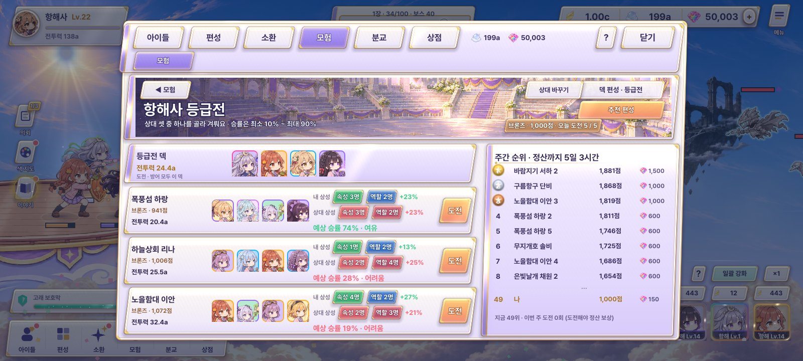
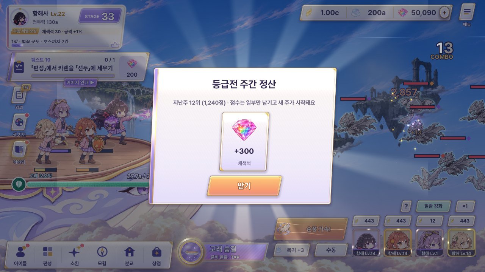
페이지 (D4-3)
A · 순위 사다리 + 상대 카드 추천
왼쪽 짙은 기둥에 계급 사다리(브론즈 → 마스터, 내 자리 표시), 가운데 상대 세 장(기운 카드 · 계급 엠블럼 · 네 얼굴 · 상성 유리 / 불리 · 예상 승률 · 「도전」), 오른쪽 이번 주 순위와 정산 시계. 정산 직후엔 들어오자마자 「지난주 정산」 카드가 먼저 뜹니다.
지금 정보 그대로 자리만 바꿈 → 가장 싸고 안전. 화면이 「표」에 가까워 결투 느낌은 B보다 약함.
2차 바탕을 노을 하늘 · 축제 섬(#55 A로 새로 짠 등급전 배경)으로, 사다리는 금실 수 놓은 벨벳 깃발천에 계급 엠블럼, 상대 카드는 크림 종이 + 금 실선 + 계급 색 띠. 1차에서 겹치던 「전투력 · 예상 승률」 줄을 나눠 겹침을 없앴고, 순위 판은 1 · 2 · 3위 메달 동그라미 + 내 줄 분홍 띠.
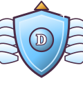
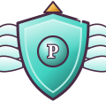
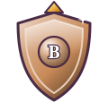
이번 주 순위
정산까지 4일 13시간이번 주 한 번이라도 도전해야 정산 보상
이번 주 순위
- 1노을함대 이안1,912
- 2폭풍섬 하랑1,640
- 3별빛선단 미르1,388
- …
- 12나 · 항해사1,086
- 13구름항구 단비1,060
이번 주 한 번이라도 도전해야 정산 보상
1차 다른 시안 · B · 결투장 세 문 (고르지 않음)
B · 결투장 세 문
밤 결투장의 아치 문 셋 — 문 안에 상대 대표 아이가 서 있고, 문 위 리본이 상성(초록 = 내가 유리 · 빨강 = 상대 유리 · 회색 = 없음). 위에 걸린 깃발에 내 계급 · 등급 점수 · 정산 시계. 「도전」은 문 아래 하나씩.
고르는 맛이 가장 큼. 대표 아이 전신 그림을 문마다 읽어야 해 첫 진입 로딩이 늘고, 주간 순위는 「?」 옆 칩으로 밀려남.
1차 다른 시안 · C · 트레이딩 카드 셋 (고르지 않음)
C · 트레이딩 카드 셋
상대 셋이 반짝이 카드로 부채꼴로 놓입니다(카드 테 = 상대 계급 색, 그림 위로 무지개 박 반사가 지나감). 왼쪽엔 내 계급 엠블럼과 덱, 주간 순위는 오른쪽 끝 세로 책갈피 탭. 「도전」은 카드 아래.
수집 게임다운 손맛 · 상대 바꾸기 때 카드 다시 돌리기 연출이 재미있음. 상성 · 승률 글자 자리가 좁아 작게 읽힘.
도전 5 / 5
은빛날개 채원
실버 · 1,120 · 전투력 19.1a
구름항구 단비
브론즈 · 1,060 · 전투력 17.9a
새벽돛 유리
브론즈 · 980 · 전투력 15.2a
등급전 결과 (D5-4) — 페이지 A 사다리 → 점수 사다리 · B 세 문 → VS 결과판 · C 카드 → 이긴 아이 한 명
1차 다른 시안 · A · 점수 사다리 이동 (목록 B) (고르지 않음)
A · 점수 사다리 이동 추천
페이지의 계급 사다리가 그대로 나와 내 표시가 등급 점수만큼 올라가거나(승리) 내려갑니다(패배). 옆에 다음 계급까지 막대, 아래 정해진 보상 띠(채색석 · 등급 점수 카드).
정보가 가장 정확(얼마 올랐고 다음까지 얼마). 화면이 조용한 편이라 승리 쾌감은 C보다 적음.
B · VS 결과판
세 문 중 들어간 문의 연장 — 비스듬히 갈린 판에 내 넷 vs 상대 넷, 진 쪽 얼굴이 잿빛으로 바랩니다. 가운데 VS, 아래 등급 점수 변화와 보상 띠.
대결 장면(색 영토) 직후 흐름이 자연스러움. 얼굴 8개를 읽어야 함(이미 장면에서 읽은 것 재사용).
1차 다른 시안 · C · 이긴 아이 한 명 포즈 (고르지 않음)
C · 이긴 아이 한 명 포즈
카드에서 튀어나온 듯 이긴 쪽 대표 아이 한 명이 크게, 뾰족 꼬리 말풍선으로 한마디. 패배면 상대 대표가 서고 내 대표는 작은 얼굴로 「다음엔 꼭!」.
가장 화려하고 아이 매력이 삶. 아이마다 승리 대사가 필요(대사 데이터 추가), 점수 정보는 한 줄로 줄어듦.
주간 정산 (D5-5) — 페이지 A 사다리 → 순위 리본 · B 결투장 → 시상대 · C 카드 → 리그 증명서
1차 다른 시안 · A · 순위 리본 (목록 C) (고르지 않음)
A · 순위 리본 추천
가운데서 양옆으로 풀리는 리본에 지난주 순위, 아래 점수 정리(남는 몫) 한 줄과 채색석 띠. 도전 안 한 주는 회색 리본 「보상 없음 · 점수만 정리돼요」.
세 상태 모두 같은 틀이라 만들기 쉬움. 1위 · 3위의 특별함은 리본 색으로만.
1차 다른 시안 · B · 시상대 (목록 A) (고르지 않음)
B · 시상대
결투장 바닥에서 1 · 2 · 3위 단이 올라오고 각 단 위에 대표 아이 얼굴. 내가 3위면 그 단이 분홍 테로 빛남, 42위면 단 아래 작은 판에 「나 42위」, 도전 안 한 주는 나 없이 시상만.
순위 경쟁이 가장 잘 느껴짐. 다른 사람 대표 아이 정보가 필요(지금은 기기 안 모형 순위라 가짜 데이터).
C · 리그 증명서
카드 수집 결의 증명서 한 장: 「이 항해사는 지난주 등급전 3위를 거두었음」, 계급 · 점수, 분홍 밀랍 도장. 도전 안 한 주는 바랜 빈 증명서.
모아 볼 거리가 생김(나중에 「지난 증명서」 목록으로 확장 가능). 글자가 많아 1280에서 빠르게 넘기기엔 무거움.
2차 증명서를 가장자리가 들쭉날쭉한 양피지(얼룩 · 종이결) + 금 이중 테 + 네 모서리 금 장식으로, 위에 계급 엠블럼, 오른쪽 아래 리본 꼬리 달린 밀랍 도장(위에서 찍힘). 「3위」는 명조 큰 숫자, 서명 줄은 필기체. 뒤로 천천히 도는 빛살.
항해사 리그 증명서
항해사 리그 증명서
이 항해사는 지난주 등급전에서
골드 1,388점을 거두었음
리그
4. 기억의 회랑 — 주인공: 복도 (D4-4 → D5-4)
잿빛이 된 기억 속 아이들과 전투력으로 겨루는 10단계(잿빛 교실 → 기억의 끝). 이기든 지든 도전 1회, 2시간마다 1회 충전(최대 3). 이기면 기억 결정, 처음 이기면 다음 단계가 열림. 예시: 3단계까지 깸 · 4단계 「꺼진 등불 거리」 도전 중. 「도전 (1회 사용)」 단추 하나는 세 시안 모두 오른쪽 아래.
지금
위 배너 + 왼쪽 10단계 목록 + 오른쪽 상세. 결과는 공용 팝업.

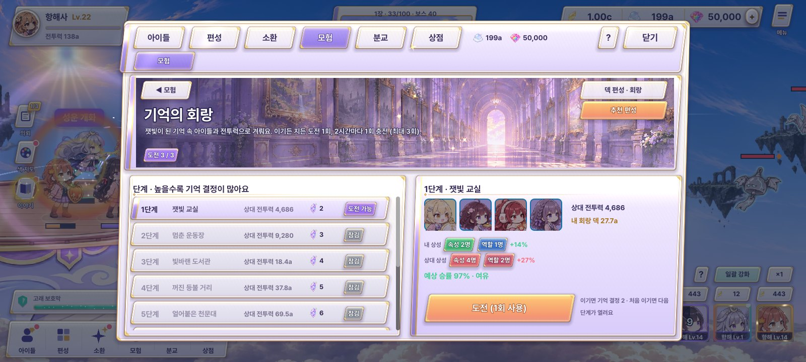
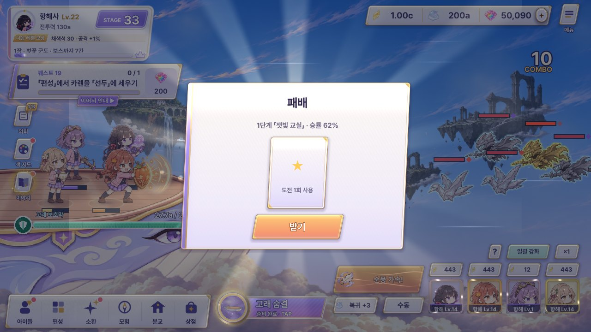
페이지 (D4-4) 2차 새 시안 — 코드: adventure_pages.gd _soul · 상대 = SOUL_LEVELS[n].team 네 명을 잿빛(modulate)으로, 이기면 기억 결정 · 처음 이기면 다음 단계
A · 잿빛 메아리 넷 — 기억 액자에서 걸어 나온 상대 추천
회랑의 상대는 잿빛이 된 기억 속 아이들(메아리)입니다. 그 넷을 흑백 전신으로 크게 세운 것이 화면의 주인공: 잿빛 액자(그 단계 장소 그림) 앞 안개 무대에 서서 가끔 깜빡이고, 이름표는 「메아리 · 하린」. 아래 열 개의 기억 구슬이 단계(깬 곳은 보라 결정 · 지금 단계는 잿빛 구슬 · 잠김), 오른쪽 크림 판에 메아리 전투력 vs 내 회랑 덱 · 승률 · 도전 횟수 결정 3개 · 「도전」.
상대를 「적」으로 똑바로 보여 줘 무엇과 싸우는지 가장 분명. 아이 전신 그림을 그대로 흑백 처리(새 그림 0장). 단계마다 상대 넷이 바뀌어 화면이 늘 새로움 · 10단계 이름이 구슬 안엔 안 들어가 지금 단계만 글자로.
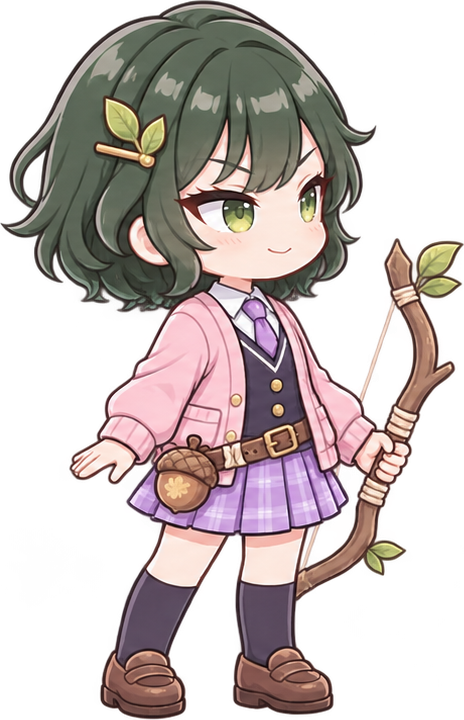
메아리 · 하린메아리 · 노아메아리 · 결메아리 · 리나5단계 · 얼어붙은 천문대
B · 기억 사진첩 — 흑백 사진 속 메아리
회랑을 펼친 사진첩으로: 왼쪽 장은 열 단계가 사진 한 장씩(깬 단계 = 색을 되찾은 사진 · 지금 단계 = 금빛 테이프 붙은 흑백 · 잠김 = 빈 자리), 오른쪽 장엔 지금 단계의 흑백 폴라로이드 — 그 장소 그림 속에 메아리 넷이 찍혀 있습니다. 사진 옆에 전투력 비교 · 승률 · 도전. 「잃어버린 기억을 사진으로 되찾는다」는 모으는 재미가 주인공.
10단계 진행이 한눈에 보이고 결과(사진에 색이 번짐)와 바로 이어짐. 메아리가 사진 안이라 A보다 작게 보이고, 단계마다 장소 그림 10장(이야기 배경 재사용 · 부족분은 장소 재조합)이 필요.
기억 사진첩
잿빛이 된 기억 속 메아리와 겨뤄 사진의 색을 되찾아요 1 잿빛 교실 2 운동장 3 도서관 4 등불 거리 5 천문대 6시든 정원 7잠든 등대 8잊힌 항구 9잿빛 왕좌 10기억의 끝회랑 결과 (D5-4) 2차 새 시안 — 대결 장면(정해진 「색 영토」) 뒤에 나오는 화면 · 페이지와 같은 글자끼리 짝
A · 메아리 넷에 색이 돌아옴 추천
페이지의 그 넷이 그대로 서 있다가, 이기면 왼쪽부터 한 명씩 흑백 → 제 색으로 돌아오며 빛이 감돌고(「되찾은 기억」), 처음 이긴 단계면 다음 단계 구슬이 열리는 꼬리표. 지면 넷이 잿빛 그대로 남고 「도전 1회 사용 · 남은 도전」. 보상은 정해진 띠 카드(기억 결정).
흑백 → 색 한 가지 연출로 게임 주제(색을 되찾기)와 바로 이어짐 · 필터만 바꾸면 돼서 가벼움. 넷이 같은 높이로 서 있어 단조로울 수 있어 등장 순서 · 빛으로 리듬을 줌.
B · 흑백 사진에 색이 번짐
사진첩의 그 폴라로이드가 크게 떠서, 이기면 사진기 플래시 → 현상되듯 흑백에서 색이 번져 장소와 아이들이 제 색을 되찾습니다. 아래 「되찾은 사진」 글씨 · 처음이면 다음 사진 자리 열림. 지면 사진이 흐린 흑백 그대로 「아직 흐릿한 기억」.
사진 한 장으로 끝나 짧고 예쁨 · 페이지 B와 짝. 아이들이 사진 속이라 「누구를 이겼나」는 A보다 덜 보임.
1차 시안 보기 (PD가 모두 반려 · 위 2차로 다시 그림)
페이지 (D4-4)
A · 원근 복도에 걸린 기억 액자 추천
소실점으로 뻗은 보랏빛 복도, 양쪽 벽에 1~10단계 액자가 가까운 것부터 걸려 있습니다. 깬 단계는 색이 돌아온 액자, 지금 단계는 빛나는 액자, 잠긴 단계는 천이 덮인 액자. 복도 끝에 빛(기억의 끝). 도전 횟수는 오른쪽 위 구슬 셋.
「기억 속을 걷는다」는 이야기와 가장 잘 맞음. 먼 액자(7~10)는 작아서 이름은 숨기고 누르면 상세에만 보임.

4단계 · 꺼진 등불 거리
잿빛이 된 기억 · 이기면 기억 결정 5 · 처음 이기면 5단계가 열려요상대 전투력 26.1a · 내 회랑 덱 21.8a · 예상 승률 48%
B · 기억의 책장
나무 책장에 책 열 권, 책 등 제목이 단계 이름. 깬 책은 색 표지, 지금 책은 살짝 빠져 나와 리본 책갈피, 잠긴 책은 자물쇠 장식. 오른쪽에 그 책이 펼쳐져 잿빛 삽화(상대 대표) · 상대 넷 · 승률.
10단계가 한 줄에 다 보여 고르기 쉬움 · 단계가 늘어도 책만 꽂으면 됨. 「복도」 주인공은 아니라 회랑 이름과는 조금 멀어짐.
4단계
꺼진 등불 거리
상대 전투력 26.1a
내 회랑 덱 21.8a
예상 승률 48%
이기면 기억 결정 5
처음 이기면 5권이 열려요
C · 원형 회랑 열 칸
둥근 회랑을 위에서 본 모양: 아치 열 개가 원을 두르고 가운데 둥근 판에 고른 단계와 상대 넷. 지금 단계 아치가 빛나고, 잠긴 아치는 줄무늬 천.
한 화면에 10단계 + 상세가 다 들어감. 원 둘레 글자는 짧게(번호만) 써야 하고, 단계가 10개를 넘으면 원을 다시 나눠야 함.
4 · 꺼진 등불 거리
상대 26.1a · 내 덱 21.8a기억의 회랑
잿빛 기억 속 아이들과 전투력으로 겨뤄요3단계까지 깸 · 기억 결정 150
규칙 · 충전회랑 결과 (D5-4) — 페이지 A 복도 → 다음 액자가 열림 · B 책장 → 이긴 아이 한 명(책 삽화) · C 원형 → VS 원
A · 액자에 색이 돌아오고 다음 액자가 열림 추천
복도의 4단계 액자가 앞으로 나와 잿빛 → 색이 붓질처럼 번지고, 옆 5단계 액자의 천이 흘러내립니다. 패배면 액자는 잿빛 그대로, 「도전 1회 사용 · 2 / 3 남음」.
「기억을 되찾는다」는 회랑 이야기를 결과에서 완성. 색 번짐은 마스크 이동 하나라 가벼움.
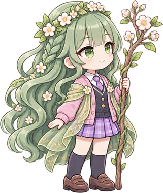
B · 책 삽화의 아이가 색을 되찾음
펼친 책 한가운데 상대 대표 아이 한 명이 색을 되찾고 뾰족 꼬리 말풍선으로 회복 대사(게임 안 회복 대사 재사용: 「색이 돌아왔어!」). 패배면 삽화가 잿빛 그대로, 내 대표 아이가 작게 「다음엔 꼭!」.
대사 데이터는 이미 있음(game_data 회복 대사). 단계마다 대표 아이 한 명을 정해야 함.
C · 둥근 VS 판
원형 회랑 그대로 — 원 왼쪽 반에 내 넷, 오른쪽 반에 잿빛 넷, 가운데 승패. 이기면 잿빛 넷이 차례로 색을 되찾음.
등급전 VS(B)와 결이 달라 헷갈리지 않음. 얼굴 8개 읽기(대결 장면 재사용).
5. 잿빛성 — 주인공: 성벽 (D4-5 → D5-1 · #62 보상 UI)
보스 없이 강해지는 잿빛을 3분(180초) 버팁니다. 30초마다 장비 1개, 180초를 다 버티면 +2개. 지금 보상 팝업은 「95초 버팀 · 장비 3장」만 보여서 「몇 초에 무엇을 얻었고 다음 장비까지 몇 초」가 안 보입니다(#62). 세 시안 모두 페이지의 30초 눈금을 결과에서 그대로 채워 「눈금 = 장비」를 한 몸으로 만듭니다. 입장은 「입장」 단추 하나. 바탕은 게임 하늘 · 구름 · 잿빛 섬 그림층에 떨어지는 재.
지금
위 배너 + 규칙 · 「버틴 시간 → 장비」 표 · 내 기록 세 칸 / 결과는 공용 팝업에 장비 세 장.

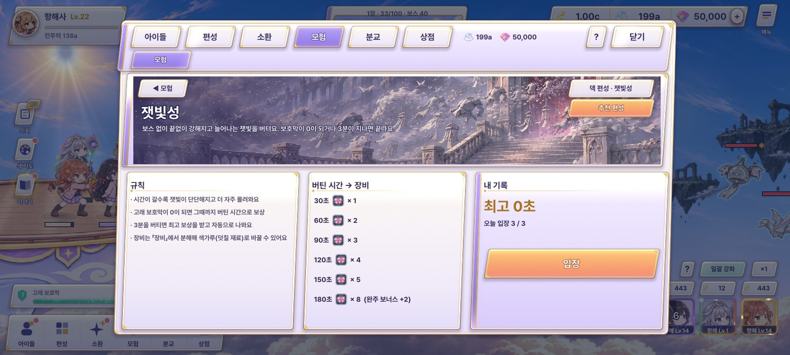
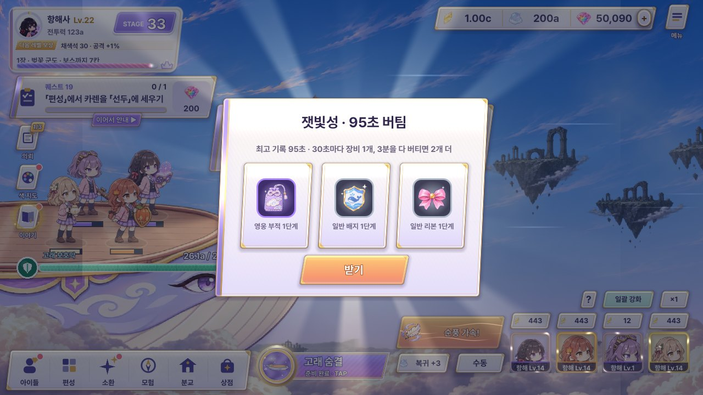
페이지 (D4-5)
1차 다른 시안 · A · 모래시계 + 보상 눈금 (고르지 않음)
A · 모래시계 + 보상 눈금
놋쇠 뚜껑 · 꼬인 나무 기둥의 모래시계에 3분이 담겨 있고(최고 기록만큼 모래가 내려와 있음), 옆 금빛 눈금 30초마다 장비 메달. 최고 기록 위로는 아직 못 받은 장비가 잿빛.
「시간을 버틴다」가 바로 읽힘. 성(장소) 느낌은 바탕 그림에만 기대고, 모래 양 계산(기록 비율)을 따로 그려야 함.
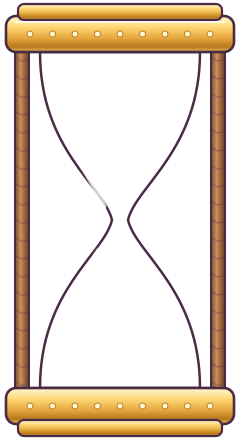
잿빛성
끝없이 강해지는 잿빛을 버텨요 · 보호막 0 또는 3분이면 끝
다음 장비까지 25초 · 오늘 입장 3 / 3
1차 다른 시안 · B · 버틴 만큼 색이 오르는 성벽 (고르지 않음)
B · 버틴 만큼 색이 오르는 성벽 추천
잿빛 하늘의 섬 위 성벽이 30초 한 칸씩 여섯 칸. 내 최고 기록만큼 벽돌이 무지개 파스텔로 물들어 있고(물든 끝에 반짝임), 칸 위 망루 깃발마다 그 칸의 장비 메달. 가운데 성문 앞이 「입장」. 게임 주제(잿빛 세상 물들이기)와 그대로 이어집니다.
페이지 · 결과(#62)가 같은 성벽 부품(칸 SVG 7장 + 문 + 깃발)으로 끝남. 칸이 6개 고정(구간이 늘면 칸 폭을 줄임).
다음 장비(120초)까지 25초 · 오늘 입장 3 / 3
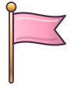
30초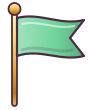
120초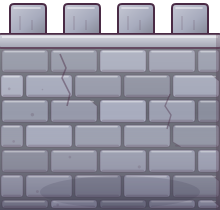
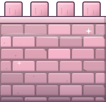
C · 가로 타임라인 (성곽 길)
해 저문 잿빛 하늘을 가로지르는 3분짜리 성곽 돌다리, 30초마다 망루 정거장과 장비 메달. 다리 위에 무지개 리본이 내 최고 기록까지 깔려 있고 고래가 그 끝에 떠 있습니다. 지난 기록은 다리 아래 흐린 눈금.
가장 단순하고 1600에서 길게 펼치기 좋음. 「성벽」보다 장소 개성이 약하고 가로로 길어 글자가 작아짐.
2차 평평한 다리 대신 빛을 받는 돌 성곽: 벽돌마다 밝기가 다르고 가장자리가 닳았으며 금 · 성가퀴 · 아치 통로가 있습니다. 30초마다 슬레이트 지붕 망루(지난 망루는 창에 불), 그 위에 장비 보석 메달. 내 최고 기록까지 벽돌이 무지개 파스텔로 물들어 있고 경계에서 빛이 숨 쉬며, 고래가 그 자리에 떠 있습니다. 바탕은 새로 짠 잿빛성 하늘 + 떨어지는 재.
- 1시간이 갈수록 잿빛이 단단하고 많아져요
- 2보호막이 0이 되면 그때까지 버틴 시간으로 장비
- 330초마다 장비 1개 · 3분 완주면 2개 더
잿빛성
최고 95초 · 다음 장비까지 25초 · 오늘 입장 3 / 3
결과 (D5-1 · #62) — A 모래시계 기록 · B 성벽 위 깃발 · C 타임라인 보상 띠 (페이지와 같은 글자끼리 짝)
1차 다른 시안 · A · 모래시계 기록 (고르지 않음)
A · 모래시계 기록
페이지의 모래시계가 왼쪽에 서고 큰 초 숫자, 그 아래 금빛 막대 위 30초 메달 여섯 개 중 지난 것만 켜지고 「다음 장비까지 25초」. 보상 띠 카드에는 장비마다 「30초 · 60초 · 90초」 꼬리표.
숫자 중심이라 가장 빨리 읽힘. 성 · 색 이야기는 약함.
30
60
90
120
150
180
B · 성벽이 물들고 망루에 깃발 추천
페이지의 그 성벽이 그대로: 버틴 초만큼 벽돌이 왼쪽부터 칸칸이 물들고, 지난 30초 망루마다 색 깃발이 오르며 장비 메달이 빛난 뒤 보상 띠로 날아갑니다. 갱신이면 리본, 완주면 금빛 보너스 둘, 0초면 잿빛 벽 + 「30초부터 물들어요」.
#62 해법이 가장 분명(눈금 = 깃발 = 받은 장비). 페이지 B를 고르지 않으면 이 결과만 따로 놀게 됨.
2차 PD 메모 「페이지 (D4-5) : B 퀄리티」는 이 결과 화면(D5-1 B)으로 읽었습니다. 페이지 C와 같은 돌 성곽 · 망루 부품을 가까이 당겨, 버틴 초만큼 벽돌이 물드는 쓸기 연출 → 지난 망루마다 천 깃발이 차례로 올라 펄럭임(못 간 망루는 해진 잿빛 깃발) → 정해진 보상 띠 카드. 「다음 장비까지 25초」는 경계의 빛 + 꼬리표.
1차 다른 시안 · C · 타임라인 보상 띠 (고르지 않음)
C · 타임라인이 곧 보상 띠
정해진 보라 보상 띠 윗단에 성곽 길을 그대로 깔고, 리본이 왼쪽부터 깔리며 30초 정거장의 장비 카드가 하나씩 뒤집힙니다. 못 간 정거장은 잿빛 카드로 남아 「다음엔 여기까지」.
화면 하나로 끝나 가장 짧은 연출. 정해진 「카드가 날아옴」과 달리 「제자리에서 뒤집힘」이라 다른 결과와 결이 조금 다름.
6. 신전 · 항해사 승급전 — 주인공: 신전 (D4-6 → D5-3)
시련의 키잡이를 60초 안에 쓰러뜨리면 계급이 하나 오르고, 계급마다 모든 아이 공격 +6% · 고래 보호막 +6%. 견습 → 3등 → 2등 → 1등 → 부선장 → 선장 → 대선장 → 전설의 항해사(8계급). 지금 결과는 별 하나와 「3등 항해사」 글자뿐. PD 규칙대로 빛기둥 안은 빼고 결과 B 자리를 「문이 열리며 장미창이 물듦」으로 바꿨고, 성화(C)도 세로 기둥이 아닌 둥근 불꽃입니다. 단추는 「도전」 하나.
지금
계급 여덟 칸 표 + 「다음 시련」 칸. 결과는 별 하나 + 글자.

페이지 (D4-6) 2차 새 시안 — 코드: adventure_pages.gd _temple · 보스 「멈춘 키잡이」(helm) 60초 · 계급 8 · 계급마다 공격 · 보호막 +6%
A · 멈춘 키잡이 — 여덟 손잡이마다 계급 추천
시련의 보스 「멈춘 키잡이」(돌 키 · 게임 그림 그대로)가 화면 주인공. 키의 여덟 손잡이 = 여덟 계급: 단 계급장은 금빛으로 켜져 있고 다음 계급(3등 항해사) 손잡이가 숨 쉬듯 빛납니다. 「이기면 키가 한 칸 돈다」. 오른쪽 크림 판에 다음 계급 · 60초 · 지금 → 다음 보너스(+6%) · 「도전」.
보스 · 계급 · 보너스가 한 그림에 묶여 「왜 싸우나」가 바로 읽힘 · 새 그림 0장(보스 그림 + 계급장). 계급이 8개를 넘으면 손잡이 비유가 깨짐(지금 데이터 8개 고정).
고래 보호막
실패해도 입장권은 그대로예요
B · 등대 항로 — 계급마다 등대 하나씩 켜기
구름 바다 위로 멀어지는 등대 섬 여덟 개(가까운 것이 지금 계급, 멀수록 높은 계급). 단 계급의 등대는 불이 켜져 수평으로 빛을 쓸고, 다음 등대는 짙은 안개 속에 멈춘 키잡이의 그림자가 서 있습니다. 「안개를 걷고 다음 등대를 켠다」 = 승급. 오른쪽 판은 A와 같은 정보.
원근이 깊어 장소감이 가장 강하고 결과(안개가 걷히며 등대 점등)가 자연스러움. 먼 등대 6개는 작아 계급 이름은 꼬리표로만 · 등대 섬 그림을 본편 섬(등대 섬)에서 재사용.
고래 보호막
결과 (D5-3) 2차 새 시안 — 페이지와 같은 글자끼리 짝 · 빛기둥 없음
A · 키가 한 칸 돌고 손잡이에 색 추천
이기면 멈춰 있던 돌 키가 「쿵」 한 칸(45°) 돌아가며 잿빛 돌에 호박빛이 번지고, 아래로 계급 리본 「3등 항해사 승급!」 + 「모든 아이 공격 · 보호막 +6%」. 보상 띠 카드는 계급장. 지면 키가 덜컥 흔들리기만 하고 잿빛 그대로 「입장권은 그대로예요」.
페이지 A와 같은 그림이 「움직여서」 결과가 됨 · 회전 + 색 필터뿐이라 가벼움. 망토까지 함께 돌아 0.4초 넘게 보이면 어색 → 짧게.
B · 안개가 걷히고 다음 등대에 불
페이지 B의 항로 그대로 가까이: 이기면 안개가 흩어지고 키잡이 그림자가 사라지며 3등 등대에 불이 들어와 수평 빛이 바다를 쓸고, 리본 「3등 항해사 승급!」. 지면 안개가 그대로 남고 등대는 꺼진 채.
장소 이야기가 가장 예쁨 · 페이지 B와 짝. 결과 글자(보너스 +6%)가 그림보다 작게 읽혀 리본에 꼭 넣어야 함.
1차 시안 보기 (PD가 모두 반려 · 위 2차로 다시 그림)
페이지 (D4-6)
A · 계단 위 신전 문 추천
구름 위 여덟 계단(한 단 = 한 계급)이 신전 문까지 이어지고, 내 아이가 지금 계단에 서 있습니다. 다음 계단은 따뜻한 빛, 문 안엔 시련의 키잡이(잿빛 키 그림). 실패 직후엔 유나가 뾰족 꼬리 말풍선으로 「아까 키잡이 체력 18% 남았어」.
「오른다」가 한눈에 보임 · 결과의 문 열림과 바로 이어짐. 계단 8단이 화면 높이를 다 써서 계급 효과 글자는 오른쪽 칸으로.
다음 시련 · 1단계
3등 항해사시련의 키잡이를 60초 안에 쓰러뜨리면 승급
모든 아이 공격 +6% · 고래 보호막 +6%
입장권 없이 언제든 도전
규칙 · 계급 효과 전체B · 계급장 진열장
밤 신전 안 유리 진열장에 계급장 여덟 칸. 받은 것은 빛나고, 다음 것은 조명 아래 떠 있고, 나머지는 빈 홈. 오른쪽에 다음 시련과 「도전」.
모으는 맛 · 무엇을 더 받을 수 있는지 분명. 계급장 그림 8종이 필요(지금은 CSS 원판에 글자로 대신).
시련의 키잡이를 60초 안에 · 모든 아이 공격 +6% · 고래 보호막 +6%
입장권 없이 언제든 도전
계급 효과 전체C · 계급만큼 커지는 성화
신전 가운데 성화 그릇: 계급이 오를수록 둥근 불꽃이 한 겹씩 커지고, 그릇 둘레 여덟 불씨 중 받은 만큼 켜집니다. 위로 솟는 기둥이 아니라 그릇 안에서 넘실대는 불꽃 + 작은 불티. 실패 직후엔 불꽃이 잦아들며 「18% 남음」.
「내 계급 = 힘」을 감각으로 줌. 계급 이름 · 효과는 오른쪽 글자에 기대야 해 정보 전달은 A보다 약함.
다음 · 3등 항해사 — 불꽃이 한 겹 커져요
시련의 키잡이를 60초 안에 · 공격 +6% · 보호막 +6%
입장권 없이 언제든 도전
결과 (D5-3) — A 문 + 장미창(빛기둥 대신) · B 메달 수여 · C 계급 리본
A · 신전 문이 열리고 장미창이 물듦 추천
목록의 「신전 빛기둥」 대신: 계단 끝 문이 양쪽으로 열리고, 그 안 원형 장미창이 가운데서 바깥으로 무지개 파스텔로 물들며 새 계급 이름이 떠오릅니다. 세로 빛 없이 원이 번지는 연출. 실패면 문이 닫힌 채 잿빛 창.
페이지 A와 그대로 이어짐 · 원형 마스크 한 번이라 가벼움. 장미창 그림을 손그림으로 바꾸면 더 고급(지금은 CSS 유리 조각).
B · 메달 수여
진열장의 다음 칸에 들어갈 계급장이 리본에 매달려 내려와 분홍 방석 위에 놓입니다. 실패면 빈 방석 위 흐린 계급장 그림자.
페이지 B와 짝. 메달 그림 8종이 필요(지금은 CSS 원판).
항해사
C · 성화가 한 겹 커지고 계급 리본
페이지 C의 성화 그릇이 그대로 나와 불꽃이 한 겹 커지고, 그 앞으로 금빛 테 리본이 풀리며 「3등 항해사」. 실패면 불꽃이 잦아들고 리본 없음.
페이지 C와 짝 · 리본은 다른 결과(주간 정산 A)와 결이 겹칠 수 있어 색을 신전 호박색으로 구분.
7. #55 모험 배경 그림 — 「AI 같다」를 걷어 내는 방법
지금 허브 카드 · 페이지 배너의 그림(assets/adventure/page_*.png · bg_*.png)은 빛 번짐 · 과한 디테일 · 대칭 구도가 AI 그림처럼 보입니다. 게임 본편(갑판 · 하늘 · 섬 레이어)은 손그림 결이라 서로 어긋납니다. 아래 세 방법 중 하나를 모험 전체에 같이 씁니다. 위 시안들은 A 방법으로 그렸습니다. 새 그림을 그릴 경우에도 같은 규칙: 붓 자국 남김 · 윤곽선 색 = 면 색보다 진한 같은 계열 · 빛 번짐 대신 평평한 그림자 한 겹.
지금 (AI 같은 배경)
A · 게임 세계 그림을 다시 짜 맞춤 추천
본편 하늘 레이어 + 본편 섬 레이어(assets/world/ch*/layer_mid.png에서 잘라 낸 섬)로 장소를 짓고, 콘텐츠 색으로 은은하게 물들임. 잿빛성은 같은 섬의 잿빛판, 신전은 흰 돔 섬. 본편과 같은 붓결이라 튀지 않습니다.
새 그림 0장 · 오늘 바로 가능(섬 30조각 잘라 둠: batch45_adventure/a/w/). 섬 종류가 본편과 같아 「새 장소」 느낌은 약함 → 콘텐츠 주인공(회전판 · 성벽 …)이 그 몫을 짐.
2차 PD 요청대로 배경이 없던 곳마다 한 장씩 같은 방법으로 짰습니다(1600×720, 1280은 가운데 자름). 재료는 모두 본편 그림: 장마다 다른 하늘(assets/world/ch1~ch6/layer_sky) + 먼 구름 바다(layer_far) + 그 장의 섬 조각(a/w/) + 가까운 구름(layer_near) + 종이결. 섬 가장자리 잘린 조각은 둥근 마스크로 지웠습니다. 위 2차 화면들이 모두 이 배경을 씁니다.
A · 같은 섬, 콘텐츠 색으로
1차 다른 시안 · B · 수채 번짐 + 실루엣 (새로 그림) (고르지 않음)
B · 수채 번짐 + 한 색 실루엣
그림책처럼 종이결 위 수채 번짐 두세 겹 + 한 색 실루엣(섬 · 성벽 · 돔). 디테일을 일부러 빼서 손으로 칠한 맛, 글자가 얹혀도 잘 읽힘. 아래는 CSS로 흉내 낸 방향 견본(실제는 손그림 6~7장).
가장 「손그림」답고 UI가 잘 보임. 그림을 새로 그려야 함(장소당 1장, 6~7장) · 본편 그림보다 단순해져 결이 갈릴 위험.
B · 수채 번짐 + 실루엣 (견본)
1차 다른 시안 · C · 배경 그림 없이 무늬 + 주인공 오브제 (고르지 않음)
C · 배경 그림을 빼고 무늬 + 주인공 오브제
배경은 콘텐츠마다 다른 무늬(항해도 격자 · 수채 동심원 · 벽돌 줄 · 별 점)만, 그림 역할은 화면 주인공(회전판 · 성벽 · 성화)이 맡음. AI 같다는 말이 나올 그림 자체가 없음.
가장 가볍고(텍스처 0장) 화질 걱정 없음. 허브 · 결과에서 「장소에 간다」는 맛이 줄어 화면이 UI 같아질 수 있음.
C · 무늬만 (주인공은 화면 위 오브제)
8. #56 겹침 · 도움말 — 규칙 글자와 가이드 말풍선이 판을 덮지 않게
지금: 원소섬 규칙 4줄이 아래 「관문 구간」 제목과 겹치고, 허브에선 가이드 말풍선(유나)이 카드 두 장을 덮습니다. 공통 규칙 셋은 어느 안에도 들어갑니다 — ① 말풍선은 판의 빈 자리나 그림 안(허브 C의 유나처럼)에서만, 꼬리는 뾰족하게 · 가리키는 단추 쪽으로 · ② 페이지 본문엔 규칙 두 줄까지 · ③ 가이드가 짚는 「열기 · 입장 · 도전」 단추 위엔 아무것도 겹치지 않음. 아래는 「나머지 규칙을 어디로 보내나」 세 가지(잿빛성 페이지 B로 예시).
지금
1차 다른 시안 · A · ? 서랍 (규칙 전부 오른쪽 서랍으로) (고르지 않음)
A · 「?」 서랍
본문엔 한 줄 요약만. 오른쪽 위 「?」를 누르면 오른쪽에서 서랍이 나와 규칙 · 보상 표 전부. 서랍이 열리면 본문은 그대로(겹치는 건 서랍뿐, 닫기 쉬움).
본문이 가장 깨끗. 규칙을 아예 안 보는 사람이 늘 수 있음(첫 입장 때 한 번 자동으로 열어 주면 보완).
잿빛성 규칙
- 시간이 갈수록 잿빛이 단단해지고 더 자주 몰려와요
- 고래 보호막이 0이 되면 그때까지 버틴 시간으로 보상
- 3분을 버티면 최고 보상을 받고 자동으로 나와요
- 장비는 「장비」에서 분해해 색가루로 바꿀 수 있어요
버틴 시간 → 장비
| 30초 | × 1 |
| 60초 | × 2 |
| 90초 | × 3 |
| 120초 | × 4 |
| 150초 | × 5 |
| 180초 | × 6 (+2 완주 보너스) |
B · 요약 두 줄 + 「규칙」 칩 말풍선 추천
본문엔 번호 붙은 두 줄만 고정 자리에(다른 칸과 겹칠 수 없게 높이 고정), 나머지는 「? 규칙」 칩 → 칩 바로 아래 뾰족 꼬리 말풍선. 화면 밖을 누르면 닫힘. 위 콘텐츠 시안들이 모두 이 방식입니다.
핵심 두 줄은 늘 보여 신규 이해에 좋고, 말풍선 하나라 만들기 쉬움. 두 줄로 줄이는 문구 정리가 콘텐츠마다 필요.
잿빛성 규칙
· 3분을 버티면 최고 보상을 받고 자동으로 나와요
· 180초 완주 보너스 장비 +2
· 장비는 「장비」에서 분해해 색가루(덧칠 재료)로
1차 다른 시안 · C · 첫 입장 코치마크 1회 (고르지 않음)
C · 첫 입장 때 한 번만 코치마크
처음 들어올 때만 화면이 어두워지고 두 곳만 뚫린 채 번호 말풍선 「① 버틴 만큼 성벽이 물들어요 → ② 여기서 입장」. 그 뒤엔 본문에 도움말 글자가 없음(「?」로 다시 보기).
처음 이해도는 가장 높음. 가이드 퀘스트 손가락과 같은 때 뜨면 겹칠 수 있어 「가이드가 있으면 코치마크 생략」 규칙이 필요.